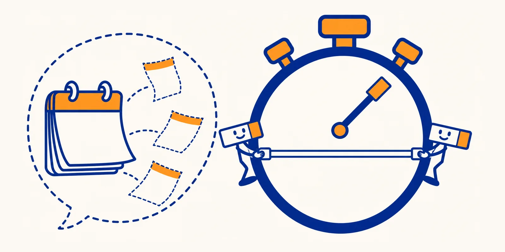

How long coding agents actually take

Measured from 3,383 completed agent runs, not from anyone's opinion. Half finished within 2 min. One in ten took more than 20 min.
Ask an assistant how long a feature will take and it answers in human-team time. agentpace answers from measured agent runs instead: P50, P80 and P90 for your own plan of tasks, with the human part stated on its own line. Logging your own runs works with Claude Code subagents and Codex today.
Try it, with no install
Needs uv. The seed data and the example plan ship inside the package.
uvx agentpace estimate --exampleIt estimates this plan, where each task is one agent run:
{
"agent_cap": 3,
"model": "claude-opus-5-5",
"tasks": [
{ "id": "schema", "kind": "feature", "risk": "normal" },
{ "id": "api", "kind": "feature", "risk": "normal", "depends_on": ["schema"] },
{ "id": "ui", "kind": "feature", "risk": "normal", "depends_on": ["schema"] },
{ "id": "docs", "kind": "docs", "risk": "normal", "depends_on": ["api"] },
{ "id": "review", "kind": "review", "risk": "low", "depends_on": ["api", "ui"] }
]
}Times by model, kind and risk
Completed runs only. Grey rows have fewer than 10 runs, so treat them as anecdotes. Risk is the agent's role as recorded (review and research agents low, migration agents high, all else normal), not a rating of the work.
No cell matches these filters. Clear one to see more.
This is not a model speed ranking
People send harder work to stronger models, so a slower row may just mean harder tasks.
This is one person's workflow, so far
3,430 runs in 293 sessions from 1 contributor, with heavy automated fan-out, so these runs may not resemble your workflow. More contributors would widen what they cover.
How well the forecasts hold up
On 56 held-out sessions, the P80 for the whole session covered 80% and the P90 covered 91%. For a single task the median miss is 78%, so read a range, never one number.
Install and check it yourself
uv tool install agentpace
npx skills add mohamedzhioua/agentpace # the agent skills
agentpace ingest # your own runs, stored locally
agentpace estimate plan.json # P50, P80 and P90 for a plan, like the one above
agentpace share --dry-run # the exact rows you would contributeTo contribute your runs, see Contributing.